Supplied unofficial study solution, not an official GTU answer key. Answers and teaching diagrams have not been independently verified. Use Enlarge image for small details.આ આપેલો બિનસત્તાવાર અભ્યાસ ઉકેલ છે, સત્તાવાર GTU જવાબવહી નથી. જવાબો અને આકૃતિઓની સ્વતંત્ર ચકાસણી થઈ નથી. વાંચવા માટે ચિત્ર મોટું કરો.
Electrical Power Generation
Q1 · Thermal and nuclear basics
Q.1 (a) Explain site selection of Thermal Power Station. (3 marks)Q.1 (a) Explain site selection of Thermal Power Station. (3 marks)3 marks૦૩ ગુણ
Site selection factors for thermal station:
- Fuel & water: Near coal mine or port/rail for coal transport; abundant cooling water from river/sea.
- Load & grid: Not too far from demand centre to reduce transmission loss; good road/rail access.
- Land & environment: Large flat land for plant, ash pond, future expansion; away from dense habitation but consider ash disposal and pollution control; soil must bear heavy foundations.
થર્મલ પાવર સ્ટેશન માટે જગ્યા પસંદ કરતી વખતે ધ્યાને લેવાની બાબતો:
- બળતણ અને પાણી: કોલસાની ખાણ કે બંદર કે રેલવે નજીક હોય તો કોલસો લાવવો સસ્તો પડે અને ઠંડુ કરવા માટે નદી કે દરિયા નું પાણી મળવું જોઈએ.
- લોડ અને ગ્રીડ: વીજળી વાપરવાનું સ્થળ બહુ દૂર ન હોય તો લાઇન લોસ ઓછો થાય અને રસ્તા રેલવે ની સારી સુવિધા હોય.
- જમીન અને પર્યાવરણ: પ્લાન્ટ, રાખ ના તળાવ અને ભવિષ્ય ના વિસ્તરણ માટે મોટી સપાટ જમીન જોઈએ, ગીચ વસ્તી થી દૂર હોય અને જમીન ભારે મશીન નું વજન સહન કરી શકે.
Q.1 (b) Explain Nuclear Fusion, Nuclear Fission and Chain reaction. (4 marks)Q.1 (b) Explain Nuclear Fusion, Nuclear Fission and Chain reaction. (4 marks)4 marks૦૪ ગુણ
Fission: Heavy nucleus like U-235 splits into smaller nuclei when hit by neutron and releases huge energy plus 2-3 new neutrons.
Fusion: Two very light nuclei like hydrogen join to form heavier nucleus and release even more energy per mass. Needs millions of degrees, happens in sun.
Chain reaction: Neutrons from one fission hit other U atoms and cause more fissions continuously. Controlled by control rods in reactor, uncontrolled causes explosion.
ફિશન એટલે ભારે ન્યુક્લિયસ તૂટવું: યુરેનિયમ 235 જેવો ભારે કણ ન્યુટ્રોન અથડાતા નાના ટુકડા માં તૂટે છે અને ઘણી ગરમી સાથે બે ત્રણ નવા ન્યુટ્રોન બહાર આવે છે.
ફ્યુઝન એટલે હલકા કણો જોડાવા: હાઇડ્રોજન જેવા હલકા કણો જોડાઈ ને ભારે કણ બને છે અને વજન દીઠ ફિશન કરતા વધુ ઊર્જા આપે છે. સૂર્ય માં આ પ્રક્રિયા થાય છે અને લાખો ડિગ્રી ગરમી જોઈએ.
ચેઇન રિએક્શન એટલે સાંકળ: એક ફિશન માંથી નીકળેલ ન્યુટ્રોન બીજા યુરેનિયમ ને તોડે અને આમ સતત પ્રક્રિયા ચાલે. રિએક્ટર માં કંટ્રોલ રોડ આને કાબૂ માં રાખે છે.
Q.1 (c) Draw Schematic Diagram of Thermal Power Station. (7 marks)Q.1 (c) Draw Schematic Diagram of Thermal Power Station. (7 marks)7 marks૦૭ ગુણ
Main parts from coal to grid: Coal handling → Pulveriser → Boiler with economizer, superheater, air preheater and FD fan → Turbine coupled to generator → Condenser with cooling tower → Feed pump and heaters back to boiler → ESP, chimney for flue gas → Ash handling. Transformer steps up to grid.
Working in brief: Coal burns, water becomes high pressure steam, steam turns turbine, turbine turns generator, exhaust steam condenses and returns as feed water. Heat recovery improves efficiency.
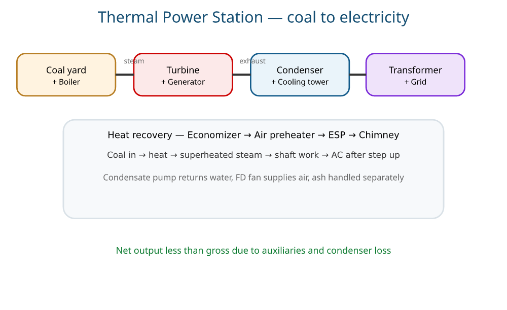
કોલસા થી ગ્રીડ સુધી ના મુખ્ય ભાગો: કોલસો લાવવો → દળવો → બોઇલર જેમાં ઇકોનોમાઇઝર, સુપરહીટર, એર પ્રીહીટર અને FD ફેન હોય → ટર્બાઇન જે જનરેટર સાથે જોડેલ હોય → કન્ડેન્સર અને કુલિંગ ટાવર → ફીડ પંપ અને હીટર પાછા બોઇલર તરફ → ધુમાડા માટે ESP અને ચીમની → રાખ નિકાલ. ટ્રાન્સફોર્મર વોલ્ટેજ વધારી ગ્રીડ માં મોકલે.
ટૂંક માં કામ: કોલસો બળે, પાણી હાઇ પ્રેશર વરાળ બને, વરાળ ટર્બાઇન ફેરવે, ટર્બાઇન જનરેટર ફેરવે, વરાળ પાછી પાણી બને અને ફરી બોઇલર માં જાય. ગરમી નો ફેર ઉપયોગ કાર્યક્ષમતા વધારે.
Q.1 (c) OR Explain the function of following auxiliaries of Thermal Power Station : (1) Boiler (2) Economizer (3) F. D. Fan (4) Air Preheater (5) Condenser (6) Turbine (7) Cooling Tower (7 marks)Q.1 (c) OR Explain the function of following auxiliaries of Thermal Power Station : (1) Boiler (2) Economizer (3) F. D. Fan (4) Air Preheater (5) Condenser (6) Turbine (7) Cooling Tower (7 marks)7 marks૦૭ ગુણ
- Boiler: Burns fuel and transfers heat to water to make high pressure steam.
- Economizer: Uses leftover flue gas heat to warm feed water before boiler, saves fuel.
- FD Fan: Forces fresh air into furnace for proper burning.
- Air Preheater: Heats incoming air using hot flue gas, improves burning.
- Condenser: Condenses exhaust steam to water and keeps low pressure at turbine exit.
- Turbine: Converts steam energy to rotating shaft work to drive generator.
- Cooling Tower: Cools condenser water by air so heat can be rejected.
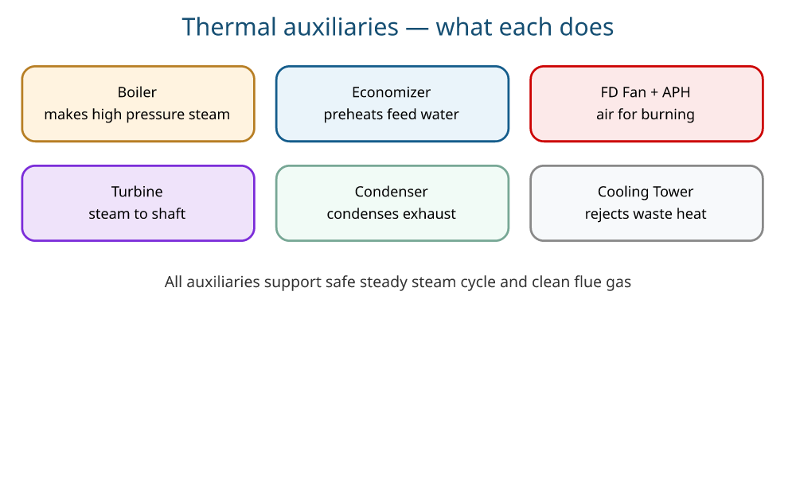
- બોઇલર: બળતણ બાળી પાણી ને ગરમ કરી હાઇ પ્રેશર વરાળ બનાવે.
- ઇકોનોમાઇઝર: ચીમની માં જતા ગરમ ધુમાડા ની ગરમી થી ફીડ વોટર ને પહેલા ગરમ કરી બળતણ બચાવે.
- FD ફેન: ભઠ્ઠી માં તાજી હવા ધકેલે જેથી કોલસો સારી રીતે બળે.
- એર પ્રીહીટર: આવતી હવા ને ગરમ ધુમાડા થી ગરમ કરી બર્નિંગ સુધારે.
- કન્ડેન્સર: ટર્બાઇન માંથી નીકળેલ વરાળ ને પાણી બનાવે અને ટર્બાઇન ના છેડે ઓછું પ્રેશર રાખે.
- ટર્બાઇન: વરાળ ની શક્તિ ને ફરતા શાફ્ટ માં ફેરવી જનરેટર ચલાવે.
- કુલિંગ ટાવર: કન્ડેન્સર ના પાણી ને હવા થી ઠંડુ કરી વધારાની ગરમી બહાર કાઢે.
Q2 · Thermal cycles and hydro
Q.2 (a) Draw & Explain Energy conversion Process in thermal power station. (3 marks)Q.2 (a) Draw & Explain Energy conversion Process in thermal power station. (3 marks)3 marks૦૩ ગુણ
Chemical energy in coal → heat in furnace → heat in steam → mechanical rotation of turbine → electrical output from generator. After turbine steam is condensed and pumped back, so cycle repeats. Losses occur in flue gas, condenser and auxiliaries.
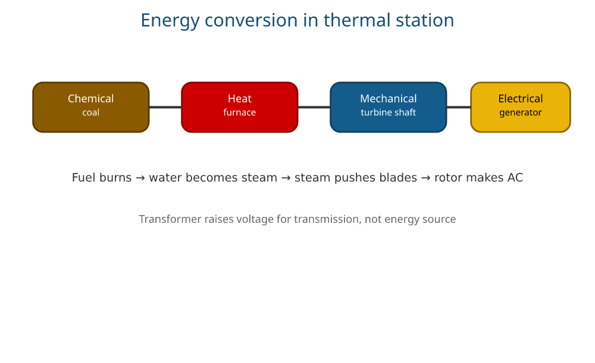
કોલસા માં રહેલ રાસાયણિક ઊર્જા → ભઠ્ઠી માં ગરમી → વરાળ માં ગરમી → ટર્બાઇન નું ફરવું → જનરેટર માંથી વીજળી. ટર્બાઇન પછી વરાળ પાણી બને અને પાછી બોઇલર માં જાય તેથી સાયકલ ફરે છે. ધુમાડો, કન્ડેન્સર અને સહાયક સાધનો માં થોડી ઊર્જા બગડે છે.
Q.2 (b) Draw and explain feed water and steam cycle of thermal power station. (4 marks)Q.2 (b) Draw and explain feed water and steam cycle of thermal power station. (4 marks)4 marks૦૪ ગુણ
Steam path: Boiler → superheater → turbine stages → condenser. Feed water path: Condenser → condensate pump → low pressure heater → deaerator → boiler feed pump → economizer → boiler. Heaters take bled steam from turbine to warm feed water.
This closed loop saves treated water and heat.
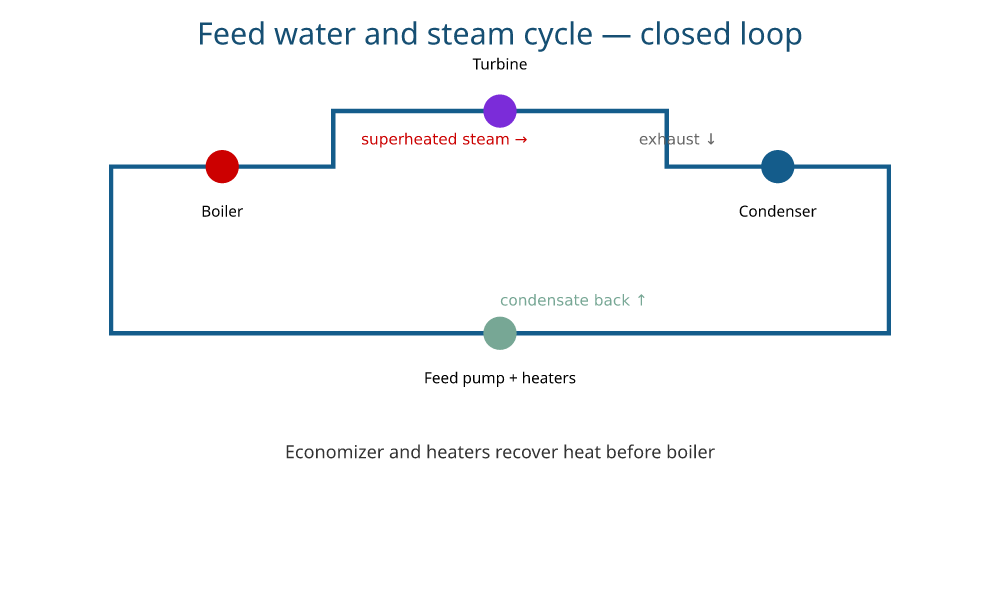
વરાળ નો રસ્તો: બોઇલર → સુપરહીટર → ટર્બાઇન સ્ટેજ → કન્ડેન્સર. ફીડ વોટર નો રસ્તો: કન્ડેન્સર → કન્ડેન્સેટ પંપ → લો પ્રેશર હીટર → ડીએરેટર → બોઇલર ફીડ પંપ → ઇકોનોમાઇઝર → બોઇલર. હીટર ટર્બાઇન માંથી થોડી વરાળ લઈ ફીડ વોટર ગરમ કરે છે.
આ બંધ લૂપ થી શુદ્ધ પાણી અને ગરમી બંને બચે છે.
Q.2 (c) Explain the function of surge-tank and pen-stock. Give the difference between catchment area and reservoir. (7 marks)Q.2 (c) Explain the function of surge-tank and pen-stock. Give the difference between catchment area and reservoir. (7 marks)7 marks૦૭ ગુણ
Surge tank: Vertical shaft open to air connected to headrace. When turbine gates close suddenly, water hammer pressure rises and surge tank absorbs it by allowing water level to oscillate. Also supplies water when gates open quickly.
Penstock: High pressure steel/concrete pipe from surge tank to turbine inlet. It carries water under full head with minimal loss.
| Catchment area | Reservoir |
|---|---|
| Total land where rain collects into river feeding site | Man-made or natural stored water behind dam within catchment |
| Bigger area decides inflow potential | Storage decides usable energy and regulation |
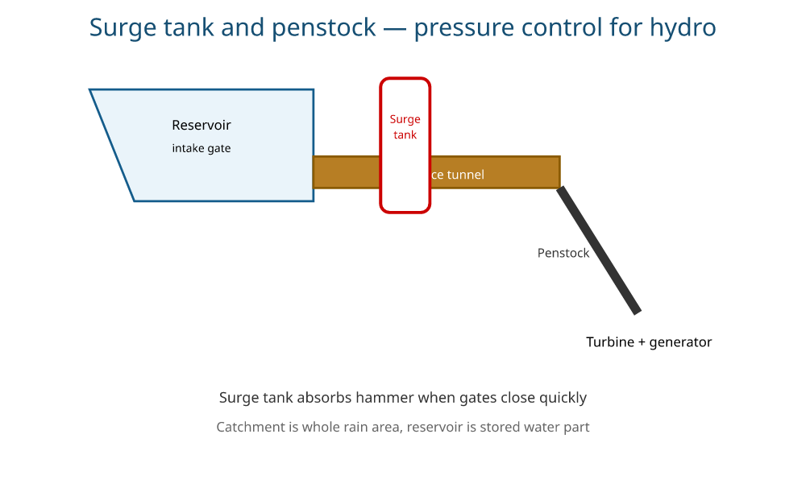
સર્જ ટેન્ક: હેડરેસ સાથે જોડેલ હવા ખુલ્લી ઊભી ટાંકી. ટર્બાઇન ના ગેટ ઝડપથી બંધ થાય ત્યારે પાણી નો ધક્કો વધે અને સર્જ ટેન્ક પાણી ની સપાટી ઊંચી કરી તે ધક્કો શોષી લે છે. ગેટ ઝડપથી ખુલે ત્યારે પાણી પણ આપે છે.
પેનસ્ટોક: સર્જ ટેન્ક થી ટર્બાઇન સુધી નો હાઇ પ્રેશર સ્ટીલ કે કોંક્રિટ નો પાઇપ. આખા હેડ સાથે પાણી ઓછા લોસ સાથે પહોંચાડે છે.
| કેચમેન્ટ એરિયા | જળાશય |
|---|---|
| જ્યાં વરસાદ નું પાણી ભેગું થઈ નદી માં આવી સાઇટ પર પહોંચે તે આખો વિસ્તાર | ડેમ પાછળ સંગ્રહિત પાણી જે કેચમેન્ટ નો ભાગ છે |
| મોટો કેચમેન્ટ વધુ આવક ની શક્યતા આપે | સંગ્રહ ઊર્જા અને નિયંત્રણ નક્કી કરે |
Q.2 (a) OR Draw and explain energy conversion process in Hydro Power Plant. (3 marks)Q.2 (a) OR Draw and explain energy conversion process in Hydro Power Plant. (3 marks)3 marks૦૩ ગુણ
Potential energy of stored water → kinetic energy in penstock → mechanical rotation of turbine → electrical from generator. Water returns to tailrace, not consumed. Head and flow decide power P = ρ·g·Q·H·η.
સંગ્રહિત પાણી ની સ્થિતિ ઊર્જા → પેનસ્ટોક માં ગતિ ઊર્જા → ટર્બાઇન નું ફરવું → જનરેટર માંથી વીજળી. પાણી ટેઇલરેસ માં પાછું જાય છે, વપરાઈ જતું નથી. હેડ અને ફ્લો પાવર નક્કી કરે છે.
Q.2 (b) OR Explain fuel and ash cycle with diagram for thermal power station. (4 marks)Q.2 (b) OR Explain fuel and ash cycle with diagram for thermal power station. (4 marks)4 marks૦૪ ગુણ
Fuel cycle: Coal yard → conveyor → crusher → pulveriser → feeder → furnace. Air from FD fan via air preheater supports burning.
Ash cycle: Bottom ash falls to water filled hopper, fly ash collected by ESP, both sent by slurry pumps to ash pond. Clean flue gas goes via chimney.
બળતણ ચક્ર: કોલસા યાર્ડ → કન્વેયર → ક્રશર → દળવાનું મશીન → ફીડર → ભઠ્ઠી. FD ફેન ની હવા એર પ્રીહીટર થઈ બર્નિંગ માં મદદ કરે છે.
રાખ ચક્ર: તળિયા ની રાખ પાણી ભરેલ હોપર માં પડે, ઉડતી રાખ ESP માં પકડાય, બંને સ્લરી પંપ થી રાખ તળાવ માં જાય. સ્વચ્છ ધુમાડો ચીમની થી બહાર જાય છે.
Q.2 (c) OR Give the classification of Hydro Power Station. State the different schemes used in Hydro Power Station. (7 marks)Q.2 (c) OR Give the classification of Hydro Power Station. State the different schemes used in Hydro Power Station. (7 marks)7 marks૦૭ ગુણ
Classification:
- By head: High above 100m, medium 30 to 100m, low below 30m. Pelton for high, Francis for medium, Kaplan for low.
- By storage: Run-of-river without pondage, run-of-river with pondage, reservoir storage, pumped storage.
- By duty: Base load, peak load.
Schemes: Dam toe powerhouse, headrace tunnel with penstock, diversion canal, pumped storage with reversible pump turbine.
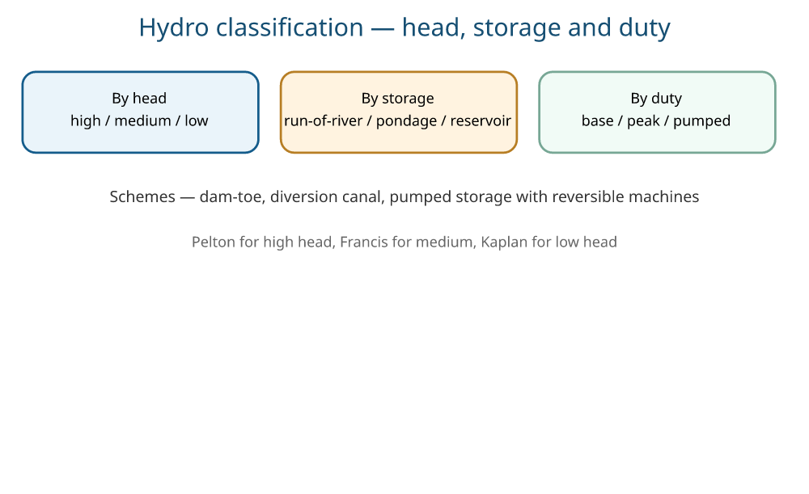
વર્ગીકરણ:
- હેડ પ્રમાણે: ઊંચું 100m થી વધુ, મધ્યમ 30 થી 100m, નીચું 30m થી ઓછું. ઊંચા માટે પેલ્ટન, મધ્યમ માટે ફ્રાન્સિસ, નીચા માટે કાપલાન.
- સંગ્રહ પ્રમાણે: તળાવ વગર નું નદી પર, તળાવ સાથે નું નદી પર, જળાશય વાળું, પંપ સ્ટોરેજ વાળું.
- કામ પ્રમાણે: બેઝ લોડ, પીક લોડ.
યોજનાઓ: ડેમ ને અડી ને પાવરહાઉસ, ટનલ અને પેનસ્ટોક વાળું, ડાઇવર્ઝન કેનાલ વાળું, રિવર્સિબલ પંપ ટર્બાઇન વાળું પંપ સ્ટોરેજ.
Q3 · Hydro, solar and nuclear
Q.3 (a) What are the points to be considered while selecting site for hydro power station? (3 marks)Q.3 (a) What are the points to be considered while selecting site for hydro power station? (3 marks)3 marks૦૩ ગુણ
- Water & head: Good catchment rainfall, perennial flow, high head possible with dam site.
- Geology & access: Strong rock for dam and tunnels, not too far from load, road access for machines.
- Storage & environment: Space for reservoir without displacing many people, low silt, forest and wildlife clearance possible.
- પાણી અને હેડ: સારો વરસાદ વાળો કેચમેન્ટ, આખું વર્ષ પાણી, ડેમ થી ઊંચો હેડ મળે.
- જમીન અને પહોંચ: ડેમ અને ટનલ માટે મજબૂત ખડક, લોડ થી બહુ દૂર નહીં, મશીન લાવવા રસ્તો.
- સંગ્રહ અને પર્યાવરણ: જળાશય માટે જગ્યા જ્યાં ઓછા લોકો ને ખસેડવા પડે, કાંપ ઓછો, જંગલ અને વન્યજીવ ની મંજૂરી મળી શકે.
Q.3 (b) Define the following terms: (1) Solar Cell (2) Solar Module (3) Solar Panel (4) Solar Array. (4 marks)Q.3 (b) Define the following terms: (1) Solar Cell (2) Solar Module (3) Solar Panel (4) Solar Array. (4 marks)4 marks૦૪ ગુણ
- Solar Cell: Basic semiconductor device that converts light directly to DC, about 0.5V.
- Solar Module: Many cells joined in series/parallel to get required voltage and current, with lamination.
- Solar Panel: Module fitted with glass, frame, junction box for installation.
- Solar Array: Group of panels connected to get desired power for plant.
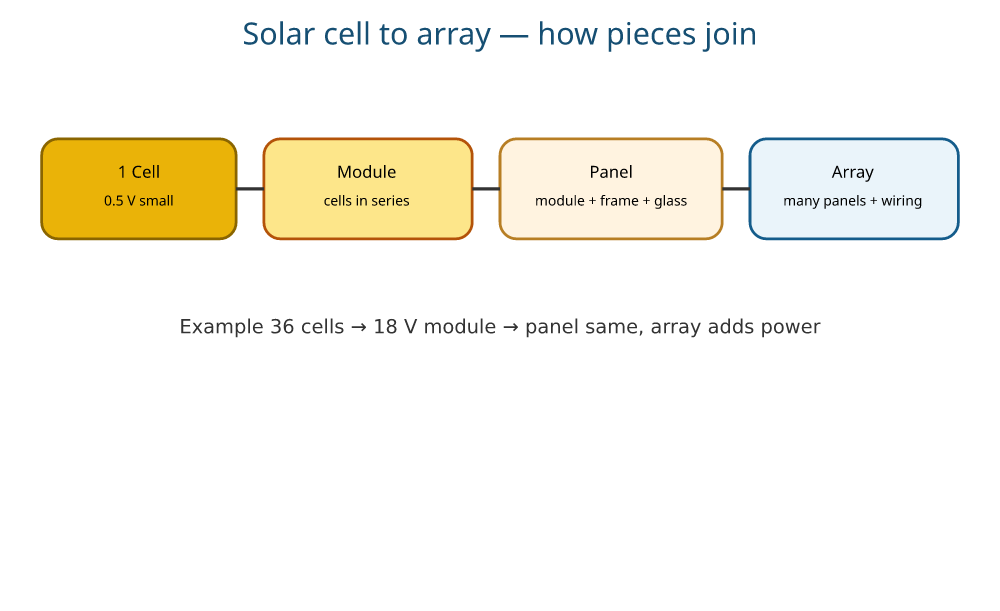
- સોલર સેલ: પ્રકાશ ને સીધો DC માં ફેરવતો નાનો સેમિકન્ડક્ટર ટુકડો, લગભગ 0.5V.
- સોલર મોડ્યુલ: ઘણા સેલ ને સીરીઝ પેરેલલ માં જોડી જરૂરી વોલ્ટેજ કરંટ મેળવવા, લેમિનેશન સાથે.
- સોલર પેનલ: મોડ્યુલ ને કાચ, ફ્રેમ, જંક્શન બોક્સ સાથે લગાવવા યોગ્ય બનાવેલું.
- સોલર એરે: ઘણી પેનલ ને જોડી પ્લાન્ટ માટે જોઈતો પાવર બનાવવો.
Q.3 (c) Draw and explain schematic diagram of Nuclear Power Station. Draw nuclear reactor diagram showing its major elements. (7 marks)Q.3 (c) Draw and explain schematic diagram of Nuclear Power Station. Draw nuclear reactor diagram showing its major elements. (7 marks)7 marks૦૭ ગુણ
Nuclear station flow: Reactor generates heat → steam generator makes steam → turbine → generator → condenser → feed pump back. Pressuriser keeps pressure in PWR, BWR boils directly.
Reactor elements: Fuel rods with U pellets inside zirconium tubes, moderator to slow neutrons, control rods to absorb neutrons, coolant to carry heat, reflector and thick concrete shielding for safety. Pressure vessel encloses core.
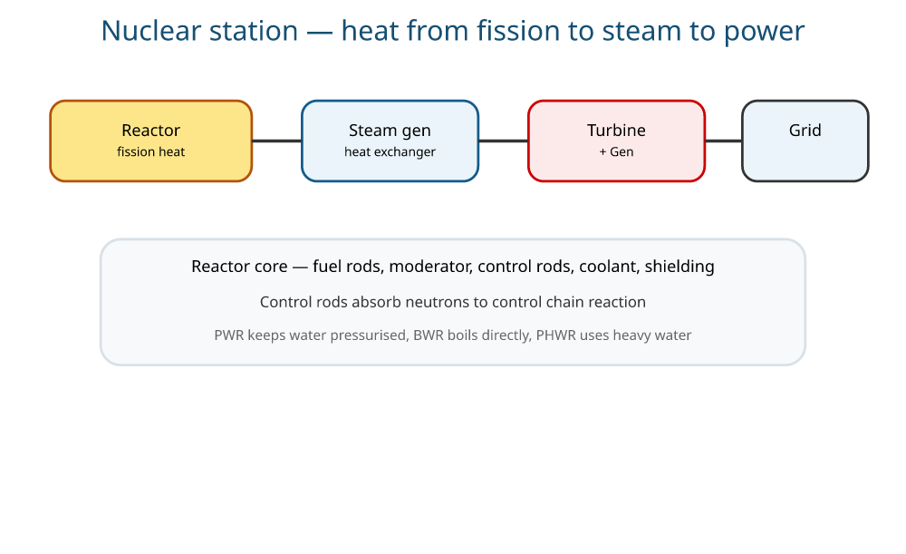
ન્યુક્લિયર સ્ટેશન નો પ્રવાહ: રિએક્ટર ગરમી બનાવે → સ્ટીમ જનરેટર વરાળ બનાવે → ટર્બાઇન → જનરેટર → કન્ડેન્સર → ફીડ પંપ પાછું. PWR માં પ્રેશરાઇઝર પ્રેશર રાખે, BWR સીધું ઉકાળે છે.
રિએક્ટર ના મુખ્ય ભાગો: યુરેનિયમ પેલેટ વાળા ફ્યુઅલ રોડ ઝિર્કોનિયમ ટ્યુબ માં, ન્યુટ્રોન ધીમા કરવા મોડરેટર, કંટ્રોલ કરવા કંટ્રોલ રોડ, ગરમી લઈ જવા કુલન્ટ, અને સલામતી માટે જાડી કોંક્રિટ શિલ્ડિંગ. પ્રેશર વેસલ કોર ને ઢાંકે છે.
Q.3 (a) OR Explain site selection of Nuclear Power Station. (3 marks)Q.3 (a) OR Explain site selection of Nuclear Power Station. (3 marks)3 marks૦૩ ગુણ
- Near sea/river for huge cooling water, stable rock for heavy reactor building, away from dense city and earthquake zone.
- Good road/rail for heavy equipment and waste transport, not too far from grid.
- Environment clearance, low population evacuation zone, no flood risk.
- દરિયા કે નદી નજીક ઠંડા પાણી માટે, ભારે રિએક્ટર બિલ્ડિંગ માટે મજબૂત ખડક, ગીચ શહેર અને ધરતીકંપ ઝોન થી દૂર.
- ભારે સાધન અને કચરો લઈ જવા સારો રસ્તો રેલવે, ગ્રીડ થી બહુ દૂર નહીં.
- પર્યાવરણ મંજૂરી, ઓછી વસ્તી વાળો ખાલી વિસ્તાર, પૂર નો ભય નહીં.
Q.3 (b) OR Draw and explain the characteristics of solar cell. (4 marks)Q.3 (b) OR Draw and explain the characteristics of solar cell. (4 marks)4 marks૦૪ ગુણ
I-V curve: At zero voltage current is short circuit current Isc, at zero current voltage is open circuit Voc. Max power point Vmpp, Impp gives Pmax. Fill factor = Pmax / Voc·Isc. Efficiency = Pmax / incident light power.
More light raises current, higher temperature slightly drops voltage.
I-V કર્વ: ઝીરો વોલ્ટેજ પર કરંટ શોર્ટ સર્કિટ કરંટ કહેવાય, ઝીરો કરંટ પર વોલ્ટેજ ઓપન સર્કિટ વોલ્ટેજ કહેવાય. વચ્ચે મહત્તમ પાવર પોઇન્ટ હોય જ્યાં Vmpp અને Impp થી Pmax મળે. ફિલ ફેક્ટર = Pmax ભાગ્યા Voc ગુણ્યા Isc. કાર્યક્ષમતા = Pmax ભાગ્યા આવતો પ્રકાશ પાવર.
વધુ પ્રકાશ થી કરંટ વધે, વધુ ગરમી થી વોલ્ટેજ થોડો ઘટે.
Q.3 (c) OR Explain Rooftop Solar PV Power System: Grid connected and standalone with diagram. (7 marks)Q.3 (c) OR Explain Rooftop Solar PV Power System: Grid connected and standalone with diagram. (7 marks)7 marks૦૭ ગુણ
Standalone: PV → charge controller → battery → inverter → load. Works off grid, battery supplies night. Controller prevents overcharge.
Grid connected: PV → inverter → net meter → grid. No battery needed, excess power goes to grid and meter runs backward. Needs grid present to operate.
Hybrid combines both for backup.
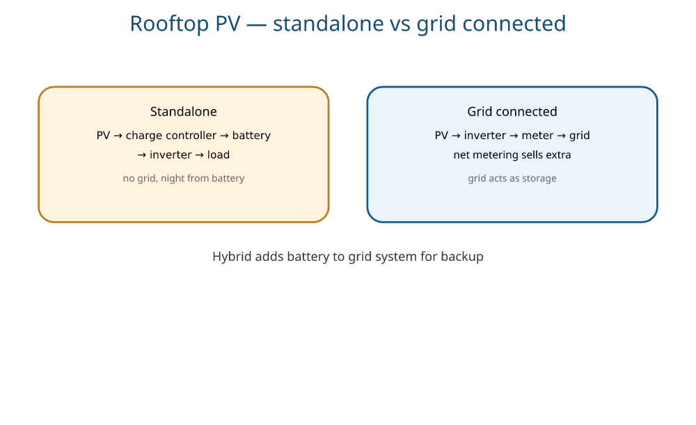
સ્ટેન્ડઅલોન: PV → ચાર્જ કંટ્રોલર → બેટરી → ઇન્વર્ટર → લોડ. ગ્રીડ વગર ચાલે, રાત્રે બેટરી આપે. કંટ્રોલર ઓવરચાર્જ અટકાવે.
ગ્રીડ કનેક્ટેડ: PV → ઇન્વર્ટર → નેટ મીટર → ગ્રીડ. બેટરી જરૂર નથી, વધારાની વીજળી ગ્રીડ માં જાય અને મીટર પાછું ફરે. ગ્રીડ હાજર હોય ત્યારે જ ચાલે.
હાઇબ્રિડ બંને નું મિશ્રણ છે જેથી બેકઅપ મળે.
Q4 · Wind, captive and diesel
Q.4 (a) Draw and explain energy conversion process in wind power plant. (3 marks)Q.4 (a) Draw and explain energy conversion process in wind power plant. (3 marks)3 marks૦૩ ગુણ
Wind kinetic energy → rotor blades capture → gearbox increases speed → generator makes AC → transformer to grid. Power depends on air density, swept area and wind cube, limited by Betz to 59%.
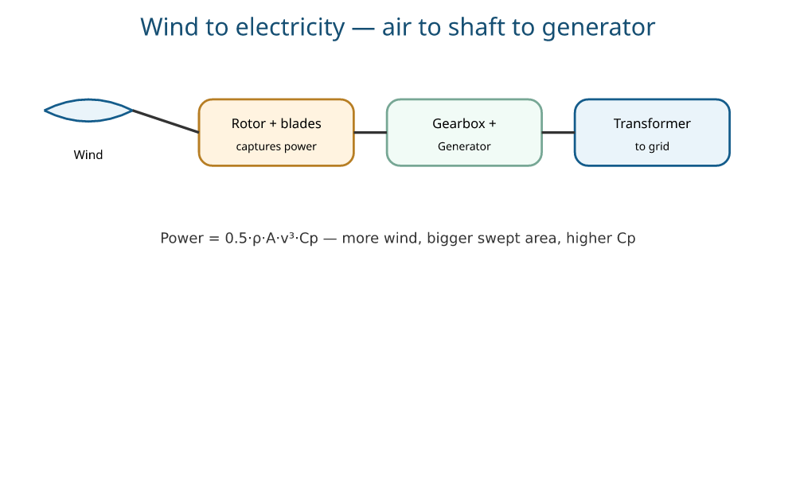
હવા ની ગતિ ઊર્જા → બ્લેડ પકડે → ગિયરબોક્સ ઝડપ વધારે → જનરેટર AC બનાવે → ટ્રાન્સફોર્મર ગ્રીડ માં મોકલે. પાવર હવા ની ઘનતા, સ્વેપ્ટ એરિયા અને હવા ની ઝડપ ના ઘન પર આધાર રાખે, બેટ્ઝ મર્યાદા 59%.
Q.4 (b) Compare between HAWT and VAWT. (4 marks)Q.4 (b) Compare between HAWT and VAWT. (4 marks)4 marks૦૪ ગુણ
| Point | HAWT | VAWT |
|---|---|---|
| Axis | Horizontal, faces wind | Vertical, works from any direction |
| Efficiency | High, 40 to 45% | Lower, 20 to 30% |
| Yaw/starter | Needs yaw, needs motor start | No yaw, self start Savonius type |
| Use | Large farms | Small urban rooftop |
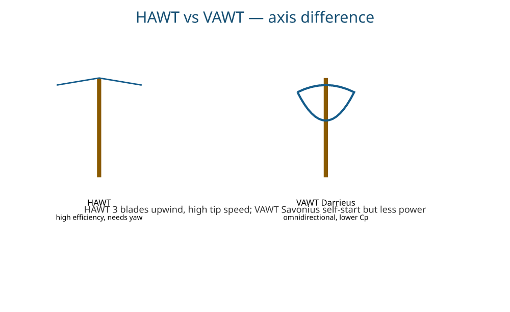
| મુદ્દો | HAWT | VAWT |
|---|---|---|
| ધરી | આડી, હવા સામે મોઢું | ઊભી, કોઈપણ દિશા થી ચાલે |
| કાર્યક્ષમતા | ઊંચી, 40 થી 45% | ઓછી, 20 થી 30% |
| ફરવું અને સ્ટાર્ટ | ફરવું પડે, મોટર થી સ્ટાર્ટ | ફરવું ન પડે, સાવોનિયસ જાતે ચાલુ થાય |
| ઉપયોગ | મોટા ફાર્મ | નાના શહેરી છત પર |
Q.4 (c) State advantages, disadvantages and limitations of solar power plant and wind power plant. (7 marks)Q.4 (c) State advantages, disadvantages and limitations of solar power plant and wind power plant. (7 marks)7 marks૦૭ ગુણ
Solar advantages: Free sun, no fuel, no pollution during operation, modular, low tilt and rooftop possible.
Solar disadvantages: Only day, needs sun, low efficiency 15 to 20%, high first cost, cleaning needed, needs storage for night.
Wind advantages: Free wind, good for farms, quick install.
Wind disadvantages: Needs windy site, noisy, bird risk, variable output, needs forecasting.
Common limitation: Intermittent, needs grid support or storage.
સોલર ના ફાયદા: સૂરજ મફત, બળતણ નહીં, ચાલતી વખતે પ્રદૂષણ નહીં, નાના મોટા કરી શકાય, છત પર લગાવી શકાય.
સોલર ના ગેરફાયદા: દિવસે જ ચાલે, તડકો જોઈએ, કાર્યક્ષમતા 15 થી 20% ઓછી, શરૂઆત નો ખર્ચ વધુ, સફાઈ કરવી પડે, રાત માટે સ્ટોરેજ જોઈએ.
વિન્ડ ના ફાયદા: હવા મફત, ફાર્મ માટે સારું, ઝડપથી લાગે.
વિન્ડ ના ગેરફાયદા: પવન વાળી જગ્યા જોઈએ, અવાજ, પક્ષી ને નુકસાન, ઉત્પાદન બદલાતું રહે, આગાહી કરવી પડે.
સામાન્ય મર્યાદા: બંને હવામાન પર આધાર રાખે તેથી ગ્રીડ ની મદદ કે સ્ટોરેજ જોઈએ.
Q.4 (a) OR Explain Captive Power Plant. (3 marks)Q.4 (a) OR Explain Captive Power Plant. (3 marks)3 marks૦૩ ગુણ
Captive plant is owned by factory to meet its own demand, like sugar mill using bagasse, steel plant using waste heat. It may export surplus to grid. Gives reliability and cost control, but needs fuel and maintenance by owner.
કેપ્ટિવ પ્લાન્ટ એટલે ફેક્ટરી પોતાની વીજળી માટે પોતાનો પ્લાન્ટ, જેમ ખાંડ મિલ બગાસ થી, સ્ટીલ પ્લાન્ટ ગરમી ના બગાડ થી બનાવે. વધારાની વીજળી ગ્રીડ ને આપી શકે. પોતાનો ભરોસો અને ખર્ચ કાબૂ રહે, પણ બળતણ અને જાળવણી માલિકે કરવાની.
Q.4 (b) OR Define the following terms: (1) Wind Turbine Efficiency (2) Swept Area (3) Cut in Wind Speed (4) Cut out Wind Speed (4 marks)Q.4 (b) OR Define the following terms: (1) Wind Turbine Efficiency (2) Swept Area (3) Cut in Wind Speed (4) Cut out Wind Speed (4 marks)4 marks૦૪ ગુણ
- Turbine Efficiency Cp: Ratio of power captured to wind power available.
- Swept Area A: Circle traced by blade tips, π·D²/4.
- Cut in speed: Minimum wind to start generating.
- Cut out speed: High wind where turbine stops to stay safe.
- ટર્બાઇન કાર્યક્ષમતા: હવા ના પાવર માંથી કેટલો પકડાયો તે ગુણોત્તર.
- સ્વેપ્ટ એરિયા: બ્લેડ ની ટોચ ફરે ત્યારે બનતું વર્તુળ, π·D²/4.
- કટ ઇન સ્પીડ: જેટલી ઓછામાં ઓછી હવા થી વીજળી બનવા માંડે.
- કટ આઉટ સ્પીડ: જેટલી વધુ હવા થી મશીન બંધ કરી દેવાય સલામતી માટે.
Q.4 (c) OR Draw line diagram of diesel power station, explain each block. Write advantages and disadvantages of diesel power station. (7 marks)Q.4 (c) OR Draw line diagram of diesel power station, explain each block. Write advantages and disadvantages of diesel power station. (7 marks)7 marks૦૭ ગુણ
Blocks: Fuel storage tank → fuel injection → diesel engine → alternator → cooling via radiator → exhaust silencer → air filter. Engine governor controls fuel as load changes.
Advantages: Quick start, good for standby and remote, small area, less water.
Disadvantages: Diesel costly, noisy, pollution, small size only, fuel transport needed.
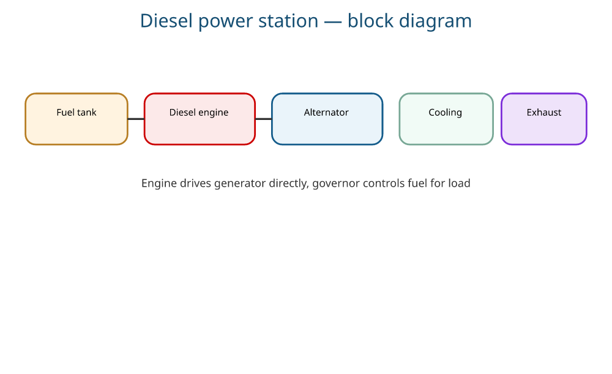
બ્લોક: બળતણ ટાંકી → ઇંજેક્શન → ડીઝલ એન્જિન → અલ્ટરનેટર → રેડિયેટર થી ઠંડુ → સાઇલેન્સર થી ધુમાડો → એર ફિલ્ટર. લોડ બદલાય ત્યારે ગવર્નર બળતણ કાબૂ કરે.
ફાયદા: ઝડપથી ચાલુ થાય, સ્ટેન્ડબાય અને દૂર ના વિસ્તાર માટે સારું, નાની જગ્યા, ઓછું પાણી.
ગેરફાયદા: ડીઝલ મોંઘું, અવાજ, પ્રદૂષણ, નાના કદ જ, બળતણ લાવવું પડે.
Q5 · Load, bio power and calculations
Q.5 (a) State the importance of Load Curve and which are the information available from the load curve ? (3 marks)Q.5 (a) State the importance of Load Curve and which are the information available from the load curve ? (3 marks)3 marks૦૩ ગુણ
Importance: Shows how demand changes over 24h. Helps plan generation, decide peak and base plants, schedule maintenance when load low.
Information: Max demand, average load, energy per day as area, load factor, when peak occurs.
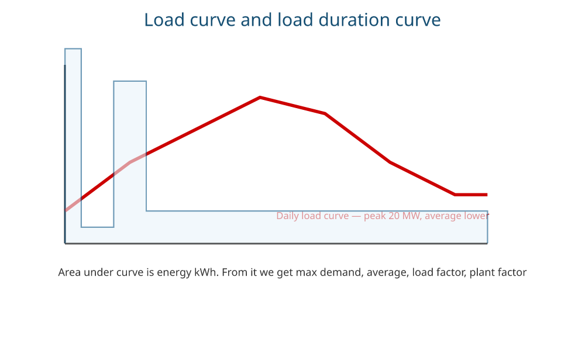
મહત્વ: 24 કલાક માં માંગ કેવી બદલાય તે બતાવે. ઉત્પાદન પ્લાન, પીક અને બેઝ પ્લાન્ટ પસંદ, રિપેર માટે ઓછા લોડ નો સમય નક્કી કરવામાં મદદ કરે.
મળતી માહિતી: મહત્તમ માંગ, સરેરાશ લોડ, દિવસ ની ઊર્જા જે એરિયા માંથી, લોડ ફેક્ટર, પીક ક્યારે આવે.
Q.5 (b) What is Bio-Chemical conversion process? Explain Layout of Bio-Chemical based power plant with neat diagram. (4 marks)Q.5 (b) What is Bio-Chemical conversion process? Explain Layout of Bio-Chemical based power plant with neat diagram. (4 marks)4 marks૦૪ ગુણ
Bio-chemical uses microbes to break bio waste without oxygen and make biogas rich in methane.
Layout: Waste collection → shredder → digester kept warm → biogas holder → gas cleaning → engine generator. Digested slurry is good manure.
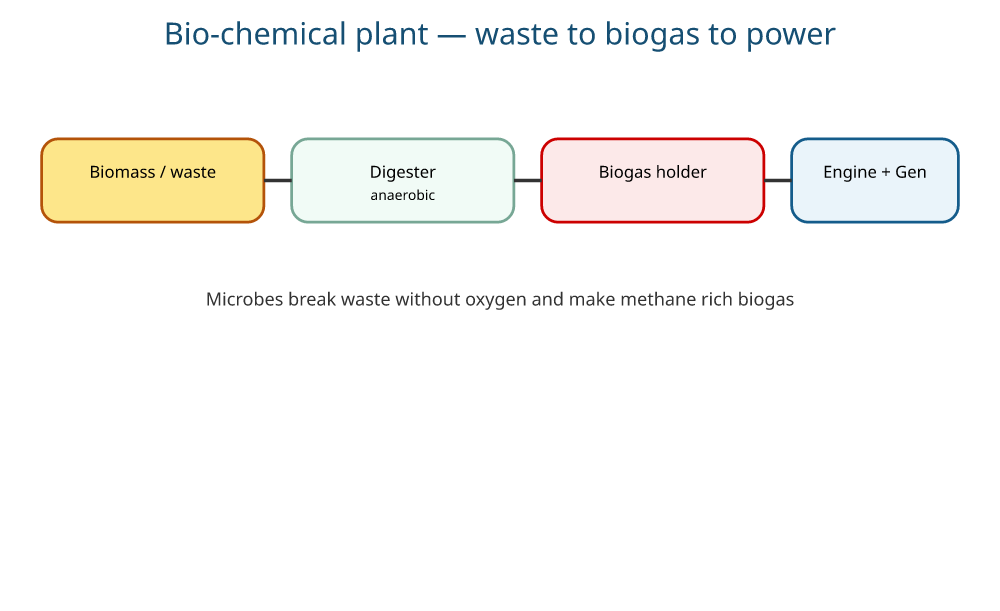
બાયો કેમિકલ માં જીવાણુ કચરા ને હવા વગર તોડી મિથેન વાળો બાયોગેસ બનાવે છે.
લેઆઉટ: કચરો ભેગો → કટર → ગરમ ડાયજેસ્ટર → બાયોગેસ ટાંકી → ગેસ સાફ → એન્જિન જનરેટર. બચેલ સ્લરી સારું ખાતર બને.
Q.5 (c) Define the following terms: (1) Average Demand (2) Maximum Demand (3) Load Factor (4) Connected Load (5) Demand Factor (6) Diversity Factor (7) Plant use Factor. (7 marks)Q.5 (c) Define the following terms: (1) Average Demand (2) Maximum Demand (3) Load Factor (4) Connected Load (5) Demand Factor (6) Diversity Factor (7) Plant use Factor. (7 marks)7 marks૦૭ ગુણ
| Term | Meaning |
|---|---|
| Average Demand | Energy per period divided by time |
| Maximum Demand | Highest load during period |
| Load Factor | Average / Maximum, shows utilization |
| Connected Load | Sum of all equipment ratings connected |
| Demand Factor | Maximum Demand / Connected Load, always less than 1 |
| Diversity Factor | Sum of individual max demands / Group max, always more than 1 |
| Plant Use Factor | Energy generated / Plant capacity × time, shows plant use |
| શબ્દ | અર્થ |
|---|---|
| સરેરાશ માંગ | સમય ના ગાળા માં ઊર્જા ભાગ્યા સમય |
| મહત્તમ માંગ | ગાળા માં સૌથી વધુ લોડ |
| લોડ ફેક્ટર | સરેરાશ ભાગ્યા મહત્તમ, ઉપયોગ કેટલો તે બતાવે |
| કનેક્ટેડ લોડ | જોડેલ બધા સાધન ના રેટિંગ નો સરવાળો |
| ડિમાન્ડ ફેક્ટર | મહત્તમ માંગ ભાગ્યા કનેક્ટેડ લોડ, હંમેશા એક થી ઓછો |
| ડાઇવર્સિટી ફેક્ટર | દરેક ની મહત્તમ નો સરવાળો ભાગ્યા જૂથ ની મહત્તમ, હંમેશા એક થી વધુ |
| પ્લાન્ટ યુઝ ફેક્ટર | બનેલી ઊર્જા ભાગ્યા પ્લાન્ટ ક્ષમતા ગુણ્યા સમય, પ્લાન્ટ કેટલો વપરાયો તે |
Q.5 (a) OR Compare base load and peak load power station. (3 marks)Q.5 (a) OR Compare base load and peak load power station. (3 marks)3 marks૦૩ ગુણ
| Base load station | Peak load station |
|---|---|
| Runs most of day at steady output, e.g., large thermal, nuclear, run-of-river hydro | Runs only at peak hours, e.g., gas turbine, pumped hydro, diesel |
| Low running cost, slow start | Higher running cost but quick start |
| બેઝ લોડ સ્ટેશન | પીક લોડ સ્ટેશન |
|---|---|
| દિવસ નો મોટો ભાગ સ્થિર ચાલે, જેમ મોટું થર્મલ, ન્યુક્લિયર, નદી નું હાઇડ્રો | માત્ર પીક કલાકો માં ચાલે, જેમ ગેસ ટર્બાઇન, પંપ હાઇડ્રો, ડીઝલ |
| ચાલવાનો ખર્ચ ઓછો, ચાલુ થતા વાર લાગે | ચાલવાનો ખર્ચ વધુ પણ ઝડપથી ચાલુ થાય |
Q.5 (b) OR Explain working principle of fuel cell for electricity generation. State types of fuel cells. (4 marks)Q.5 (b) OR Explain working principle of fuel cell for electricity generation. State types of fuel cells. (4 marks)4 marks૦૪ ગુણ
Fuel cell makes DC directly by chemical reaction, not burning. At anode hydrogen splits to H+ and electrons. H+ passes through electrolyte, electrons go via load. At cathode oxygen plus H+ plus electrons make water. No moving parts, low pollution.
Types: PEMFC, PAFC, MCFC, SOFC, AFC.
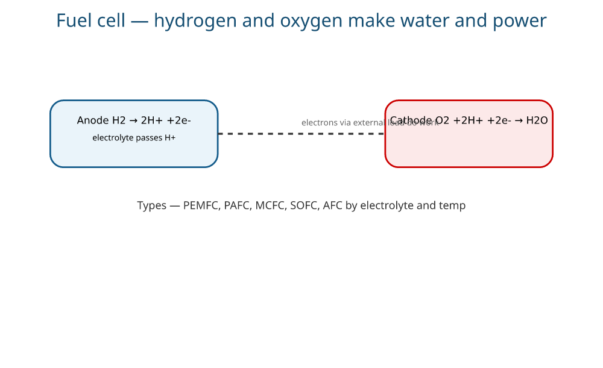
ફ્યુઅલ સેલ બાળ્યા વગર રાસાયણિક પ્રક્રિયા થી સીધો DC બનાવે. એનોડ પર હાઇડ્રોજન તૂટી H+ અને ઇલેક્ટ્રોન બને. H+ ઇલેક્ટ્રોલાઇટ માંથી જાય, ઇલેક્ટ્રોન લોડ માંથી જાય. કેથોડ પર ઓક્સિજન, H+ અને ઇલેક્ટ્રોન થી પાણી બને. ફરતા ભાગ નહીં, પ્રદૂષણ ઓછું.
પ્રકાર: PEMFC, PAFC, MCFC, SOFC, AFC.
Q.5 (c) OR A generating station has a connected load of 43 MW and a maximum demand of 20 MW; the units generated being 61.5 x 10^6 per annum. Calculate (i) the demand factor and (ii) load factor. (7 marks)Q.5 (c) OR A generating station has a connected load of 43 MW and a maximum demand of 20 MW; the units generated being 61.5 x 10^6 per annum. Calculate (i) the demand factor and (ii) load factor. (7 marks)7 marks૦૭ ગુણ
Given: Connected load 43 MW, Max demand 20 MW, Units per year 61.5 ×10^6 kWh.
Low load factor means peak high compared to average, capacity underused part of year.
આપેલ: કનેક્ટેડ લોડ 43 MW, મહત્તમ માંગ 20 MW, વર્ષ ની ઊર્જા 61.5 ×10^6 kWh.
ઓછો લોડ ફેક્ટર એટલે પીક સરેરાશ કરતા ઘણો વધુ, વર્ષ ના ભાગ માં ક્ષમતા ઓછી વપરાય.